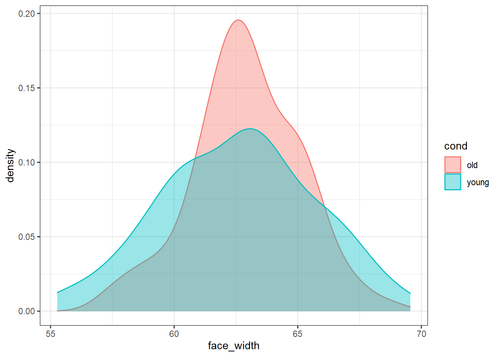

In this example, I show how you can match two conditions on the distribution of one confounding variable using the overlapping index (Pastore & Calcagni, 2019). Here, we maximise distributional overlap to ensure our two conditions are distributionally similar.
library(tidyverse)
library(overlapping) # contains function for calculating overlap indexstim_pool <- read_csv("stim_pool.csv")Let’s create a list of 100 young and 100 old faces, matched on face width. To match the conditions, we’ll maximise distributional overlap on the face_width variable, using the overlapping package.
First, we define our conditions. Let’s say young faces are <28 years old, and old faces are >50 years old. We can use dplyr’s mutate() and case_when() to create our conditions.
stim_pool <- mutate(stim_pool, cond = case_when(age<28 ~ "young", age>50 ~ "old"))This gives us >1000 candidate items for each of our conditions.
count(stim_pool, cond)## # A tibble: 3 x 2
## cond n
## <chr> <int>
## 1 old 1116
## 2 young 1202
## 3 <NA> 2682Before we can start with the simulations, we need to make sure our datasets will be reproducible. We can do this by creating a vector of seeds which will be used to select our stimuli. Random seeds make the random number generator give reproducible results. If we want to run 1000 simulations, this code will create a vector of 1000 random seeds for us. Random seed values can be any integer (whole number) we can represent in R. The smallest possible seed is 1, and we can use .Machine$integer.max to get the maximum possible seed number R will let us represent.
For speed, I’m only running 1000 iterations in this example, but I recommend running much larger numbers of iterations to improve the quality of the match.
I also set the seed first so the result are reproducible, but feel free to comment that out if you would like to get a different result to mine.
set.seed(42) # comment this line out (put # at the start of the line) to get a different result to mine
n_iter <- 1000
seeds <- sample(1:.Machine$integer.max, n_iter)We want to simulate a large number of random samples. On each iteration, we can record the distributional overlap between face width values of each condition. We can use map_df() to loop over our seeds and record the overlap index values from each iteration in a large dataframe.
Depending on how many iterations we run, this could take a long time.
res <- map_df(seeds, function(seed_i) {
# set the seed, so we can recreate any sample later
set.seed(seed_i)
sample <- stim_pool %>%
# only keep observations from conditions we are interested in (remove faces from ages 29 to 49)
filter(cond %in% c("young", "old")) %>%
# for each condition, randomly select 100 items
group_by(cond) %>%
slice_sample(n = 100)
# get the face_width values for the young condition in this sample
face_width_young <- sample %>%
filter(cond == "young") %>%
pull(face_width)
# get the face_width values for the young condition in this sample
face_width_old <- sample %>%
filter(cond == "old") %>%
pull(face_width)
# get the degree of overlap on the control variable between the two samples
ov_results <- overlapping::overlap(list(face_width_young, face_width_old))
# extract the actual value for the degree of overlap
ov_value <- ov_results$OV
# return a row of the dataframe with the seed and overlap value
tibble(seed = seed_i, ov = ov_value)
})We can now look at the distribution of overlapping index values from all the random samples. The closer to 1, the better the overlap. I’ve added the points below the distribution to show the results from each individual sample.
ggplot(res, aes(ov)) +
geom_density() +
geom_point(aes(y = -0.5), position = position_jitter(height=0.5)) +
xlab("Overlapping Index")We can now sort the results by overlapping index (descendingly) to order them by how well-matched the conditions are.
res_sorted <- arrange(res, desc(ov))
res_sorted## # A tibble: 1,000 x 2
## seed ov
## <int> <dbl>
## 1 1213885628 0.943
## 2 1546785205 0.937
## 3 343724044 0.936
## 4 1958520577 0.934
## 5 677473488 0.933
## 6 2089614910 0.933
## 7 1391940700 0.929
## 8 1577237330 0.927
## 9 350431341 0.926
## 10 313692455 0.926
## # ... with 990 more rowsNow we can just extract the best seed as that which has the highest overlapping index.
# get the seed atthe top (that with highest overlap, since we sorted the dataframe)
best_seed <- res_sorted %>%
pull(seed) %>%
first()
best_seed## [1] 1213885628Now we know that 1213885628 is the best seed, we can use that seed to recreate the stimulus set. This code needs to be identical to our simulation code to ensure we recreate the exact same stimulus set.
set.seed(best_seed)
best_stim <- stim_pool %>%
filter(cond %in% c("young", "old")) %>%
group_by(cond) %>%
slice_sample(n = 100)To prove that the stimuli are well-matched on face width, here is what the distribution of face_width looks like for each condition:
ggplot(best_stim, aes(face_width, colour=cond, fill=cond)) +
geom_density(alpha=0.4)We could use the faces in best_stim for our experiment, and be fairly sure that we’ve controlled for face width.
For comparison, here is what the worst stimulus set looks like:
# sort ascendingly (smallest overlap first), and extract the seed with the worst match
worst_seed <- res_sorted %>%
arrange(ov) %>%
pull(seed) %>%
first()
set.seed(worst_seed)
# recreate the worst stimulus set
worst_stim <- stim_pool %>%
filter(cond %in% c("young", "old")) %>%
group_by(cond) %>%
slice_sample(n = 100)
ggplot(worst_stim, aes(face_width, colour=cond, fill=cond)) +
geom_density(alpha=0.4)